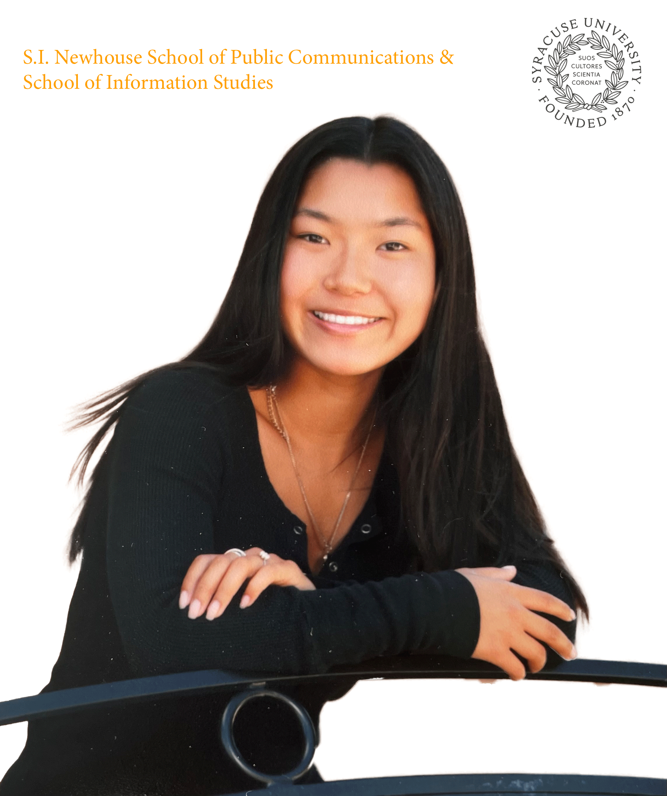

My name is Meena Chung. I am a student at Syracuse University, with dual majors in Television, Radio, Film and Innovation, Society, Technology.
I am interested in film production. I have recently taken on the role of Co-Director and Executive Producer of the show Loud & Clear on Orange Television Network, which is an award-winning music video studio production series at Syracuse University that spotlights emerging campus talent. I have also taken on several other roles as a video editor for YouTube content creators with a wide range of topics including:
I myself love to travel and explore new places and cultures, which I enjoy doing with family and friends. Additionally, I love dogs (especially my own). My hobbies include being outside, any sort of exercise, cooking, and reading.
©2025